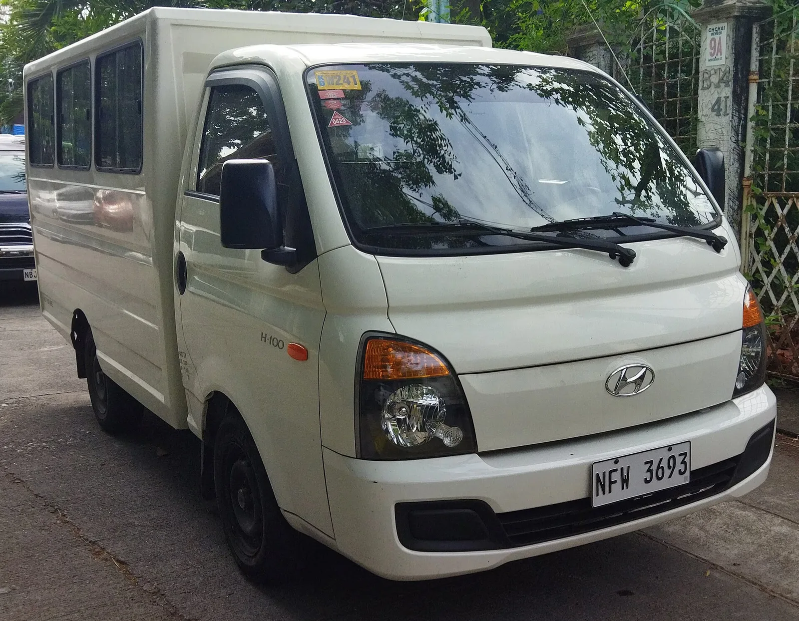

▲ 캡오버 구조는 운전석이 앞바퀴 위에 놓여 전면 완충 공간이 거의 없다 ⓒ Wikimedia Commons
차세대 포터 위장차에서 눈에 띈 것은 앞머리입니다.
운전석 앞에 독립적인 전면 구조물이 생겼습니다. A필러와 차체 최전단 사이 거리가 현행보다 뚜렷하게 길어졌습니다.
이건 디자인 변경이 아닙니다. 캡오버 구조가 오랫동안 안고 있던 문제에 대한 답입니다.
1. 캡오버 구조란 무엇인가
캡오버(cab-over)는 운전석이 앞바퀴 위에 얹힌 구조입니다. 엔진이 좌석 아래나 뒤에 놓입니다.
| 구분 | 캡오버 | 세미보닛·보닛형 |
|---|---|---|
| 운전석 위치 | 앞바퀴 위 | 앞바퀴 뒤 |
| 전면 완충 공간 | 거의 없다 | 확보된다 |
| 같은 전장에서 적재 공간 | 유리 | 불리 |
| 회전반경 | 유리 | 불리 |
| 전방 시야 | 유리 | 보통 |
| 정면충돌 안전 | 불리 | 유리 |
캡오버가 국내 소형 트럭의 표준이 된 이유는 명확합니다. 같은 전장에서 짐칸을 최대한 길게 뽑을 수 있고, 좁은 골목에서 회전반경이 작습니다. 도심 배송에 최적화된 형태입니다.
대가는 정면충돌입니다. 운전자 무릎 앞에 사실상 아무것도 없습니다. 충돌 에너지를 흡수할 구조물이 없으면, 그 에너지는 캡과 탑승자에게 직접 전달됩니다.
이는 추정이 아니라 시험으로 확인된 사안입니다. 포터는 2008년 시속 64km 40% 오프셋 충돌 시험에서 '취약(Poor)' 판정을 받은 바 있습니다. 캡오버 구조의 한계가 그대로 드러난 결과였습니다.
2. "단계적으로 흡수한다"는 말의 의미
현대 차량의 전면부는 크게 세 구간으로 나뉩니다.
| 순서 | 구간 | 역할 |
|---|---|---|
| 1 | 범퍼 빔·크래시 박스 | 저속 충돌 흡수 |
| 2 | 프런트 사이드 멤버(크럼플 존) | 접히면서 에너지를 소모 |
| 3 | 캐빈(승객실) | 변형되지 않고 버틴다 |
2번 구간이 길수록 3번이 안전해집니다. 캡오버는 이 2번 구간이 극도로 짧습니다. 세미보닛으로 바꾸면 여기서 물리적 길이를 벌 수 있습니다.
기사가 짚은 "A필러와 차체 최전단 사이 공간이 뚜렷하게 길어졌다"는 관찰이 바로 이 크럼플 존 확보를 가리킵니다.

▲ 캡오버는 운전자 무릎 앞에 완충 구조가 거의 없다
3. 무엇을 내주게 되나
앞을 늘리면 어딘가는 줄어듭니다. 선택지는 세 가지입니다.
| 방식 | 결과 |
|---|---|
| 전장을 늘린다 | 적재 공간 유지 — 다만 회전반경과 주차성이 나빠진다 |
| 짐칸을 줄인다 | 전장 유지 — 적재 능력 감소로 상용 고객이 민감하게 반응 |
| 캡을 줄인다 | 실내 거주성 악화 — 장시간 운전자에게 불리 |
소형 트럭 고객에게 짐칸 길이는 곧 생계입니다. 파렛트 규격이나 특정 화물 크기에 맞춰 차를 고르는 경우가 많습니다. 현대차가 어느 쪽을 택했는지가 이 차의 성패를 가릅니다.
4. 배기계통이 보였다는 것
포착된 위장차에서 배기계통으로 추정되는 부품이 확인됐습니다. 내연기관이 얹힌다는 뜻입니다.
| 구분 | 내용 |
|---|---|
| 내연기관 | LPG 터보 — 디젤은 이미 단종 |
| 전동화 | 포터 II 일렉트릭 |
소형 트럭에서 디젤이 사라진 것은 배출가스 규제 때문입니다. 그 자리를 LPG 터보가 메웠습니다. 차세대 모델에서도 내연기관 선택지가 유지된다면, 전기 모델과 병행하는 구성이 될 가능성이 큽니다.
상용 시장에서 전기 모델만으로는 아직 대응이 어렵습니다. 하루 주행거리가 길고 적재 상태에서 전비가 크게 떨어지는 사용 패턴이 흔하기 때문입니다.
▲ 소형 트럭은 특장·작업차로 파생되는 폭이 넓어 차체 변경의 파급이 크다
5. 왜 지금 바꾸나
국내 소형 트럭은 오랫동안 충돌 안전 평가의 사각지대에 있었습니다. 승용차 대상 신차안전도평가(KNCAP)의 주 대상이 아니었기 때문입니다.
다만 흐름은 바뀌고 있습니다. 상용차의 충돌 안전 기준을 강화하는 논의가 국내외에서 이어져 왔고, 유럽은 이미 소형 상용차에 대한 요구 수준을 높여 왔습니다. 수출을 염두에 둔다면 대응이 불가피합니다.
포터는 2025년 5만 6,538대가 팔린 소형 상용차 1위 모델입니다. 구조를 바꾸는 결정은 그만큼 무겁고, 그래서 이번 변화가 갖는 의미도 큽니다.

▲ 차체 구조 변경은 생산라인 전반의 재설계를 동반한다
6. 정리
차세대 포터가 캡오버에서 세미보닛 형태로 바뀌는 것으로 분석됩니다. 운전석 앞에 독립 전면 구조물이 생겼고, A필러와 차체 최전단 사이 거리가 뚜렷하게 길어졌습니다.
목적은 충돌 에너지의 단계적 흡수입니다. 캡오버 구조가 안고 있던 전면 완충 공간 부족 문제를 물리적으로 해결하는 방식입니다.
배기계통으로 추정되는 부품이 확인돼 내연기관 탑재 가능성이 제기됐습니다. 현행 포터 II는 LPG 터보와 전기차로 판매 중입니다. 현대차는 세부 사양과 출시 일정, 차명을 공식 발표하지 않았습니다.